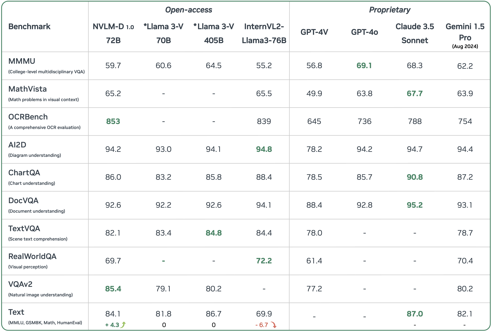

Today (September 17th, 2024), we introduce NVLM 1.0, a family of frontier-class multimodal large language models (LLMs) that achieve state-of-the-art results on vision-language tasks, rivaling the leading proprietary models (e.g., GPT-4o) and open-access models (e.g., Llama 3-V 405B and InternVL 2). Remarkably, NVLM 1.0 shows improved text-only performance over its LLM backbone following multimodal training. We are open-sourcing the model weights and code for the community.
Overview

NVLM 1.0 versus leading proprietary and open-access multimodal LLMs. Note that the model weights for ∗Llama 3-V have not been released as of the time of this report. The results demonstrate that NVLM 1.0 achieves performance on par with leading models across both vision-language and text-only tasks. Additionally, we compare multimodal LLM to its backbone LLM on text-only tasks. The text performance of InternVL2-Llama3-76B drop significantly after mulitmodal training. Llama 3-V 70B and 405B show no degradation in text-only tasks, as their LLM backbones are frozen during multimodal training. In contrast, our NVLM-D1.0 72B model demonstrates significant improvements over its text backbone on text-only math and coding benchmarks, with average accuracy increasing by 4.3 points after multimodal training.
Qualitative Study
Our NVLM-D-1.0-72B demonstrates versatile capabilities in various multimodal tasks by jointly utilizing OCR, reasoning, localization, common sense, world knowledge, and coding ability. For instance, our model can understand the humor behind the “abstract vs. paper” meme in example (a) by performing OCR to recognize the text labels for each image and using reasoning to grasp why juxtaposing “the abstract” — labeled with a fierce-looking lynx — and “the paper” — labeled with a domestic cat — is humorous. NVLM accurately performs localization to effectively answer locationsensitive questions, such as “What is the difference between the left, middle, and right objects in the image?” in example (b). NVLM is capable of performing mathematical reasoning and coding based on visual information, such as tables and handwritten pseudocode, as illustrated in example (d) and (e).
Citation
@article{nvlm2024,
title={NVLM: Open Frontier-Class Multimodal LLMs},
author={Dai, Wenliang and Lee, Nayeon and Wang, Boxin and Yang, Zhuoling and Liu, Zihan and Barker, Jon and Rintamaki, Tuomas and Shoeybi, Mohammad and Catanzaro, Bryan and Ping, Wei},
journal={arXiv preprint},
year={2024}}